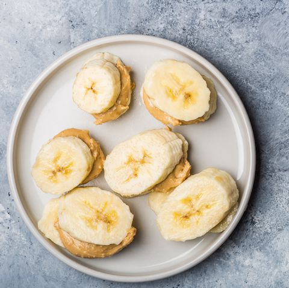
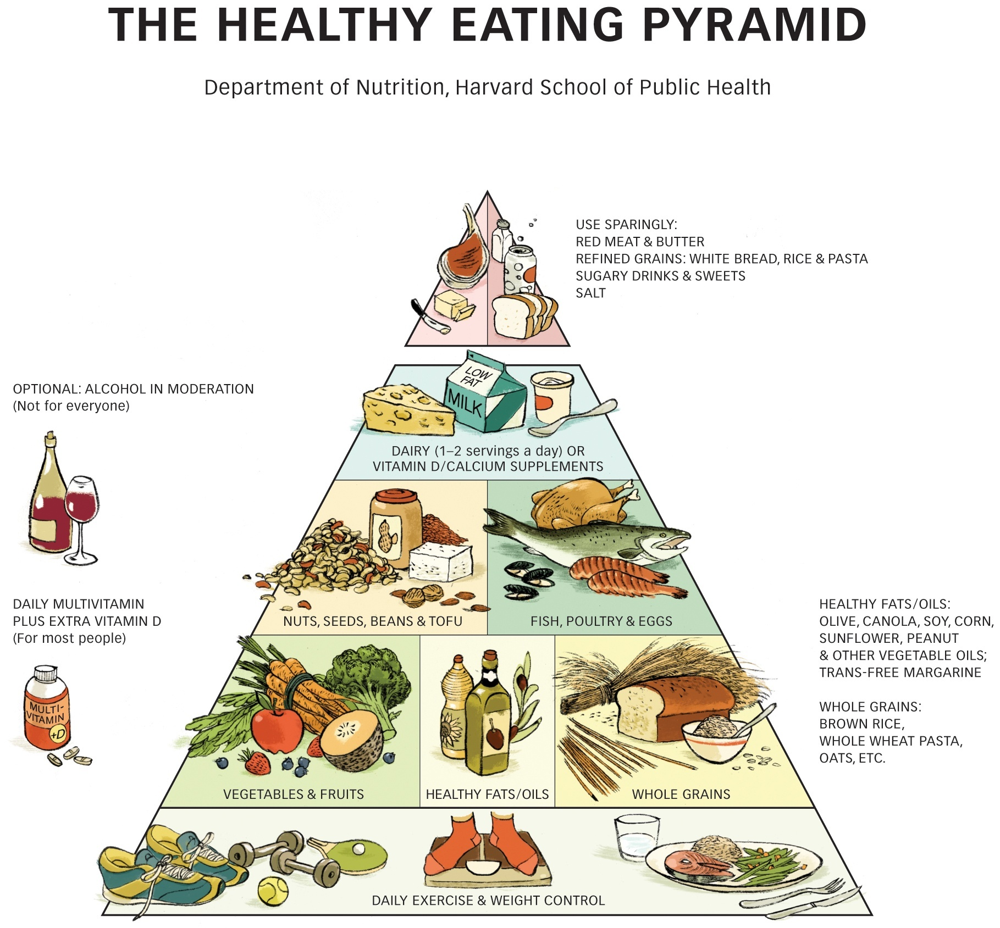

Healthy Snacks?
Banana Peanut butter sandwiches, Jun 21, 2019

For a pre- or post-workout snack, banana smeared with peanut butter couldn't be easier.
Banana Benefits:
- Rich in potassium and fiber
- Contain powerful antioxidants
- Aid in weight loss
- Improves digestive health
Peanut Butter Benefits:
- Weight loss
- Boosting heart health
- Regulates blood sugar levels
- Rich in dietary fiber
Healthy Eating Pyramid

Consumers can think of the Healthy Eating Pyramid as a grocery list: Vegetables, fruits, whole grains, healthy oils, and healthy proteins like nuts, beans, fish, and chicken should make it into the shopping cart every week, along with a little yogurt or milk if desired.
The Healthy Eating Pyramid also addresses other aspects of a healthy lifestyle—exercise, weight control, vitamin D, and multivitamin supplements, and moderation in alcohol for people who drink—so it’s a useful tool for health professionals and health educators.
The Healthy Eating Plate and the companion Healthy Eating Pyramid summarize the best dietary information available today. They aren’t set in stone, though, because nutrition researchers will undoubtedly turn up new information in the years ahead. The Healthy Eating Pyramid and the Healthy Eating Plate will change to reflect important new evidence.
Harvard T.H Chan Harvard Article